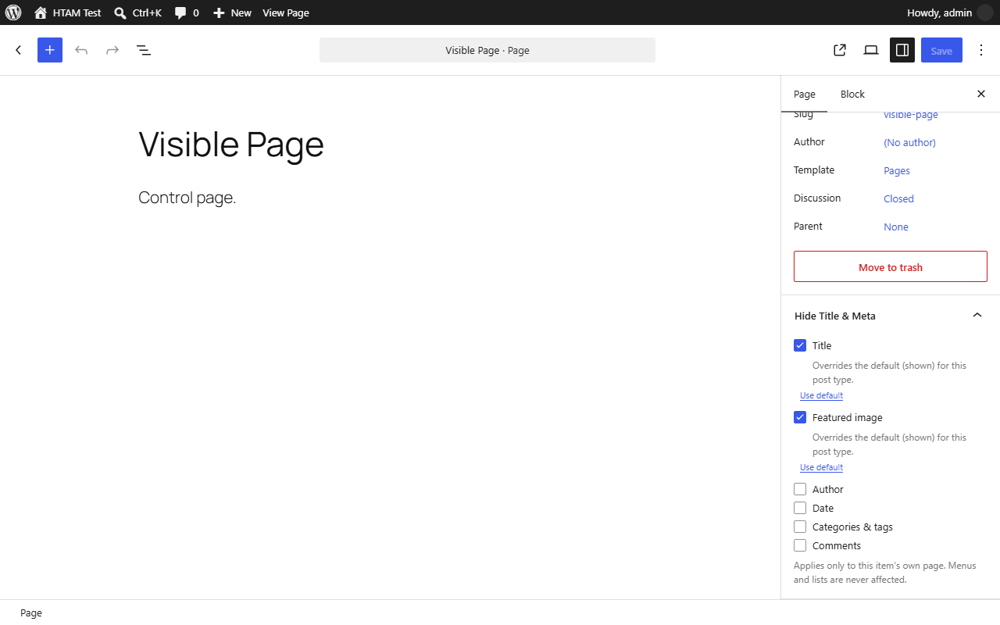
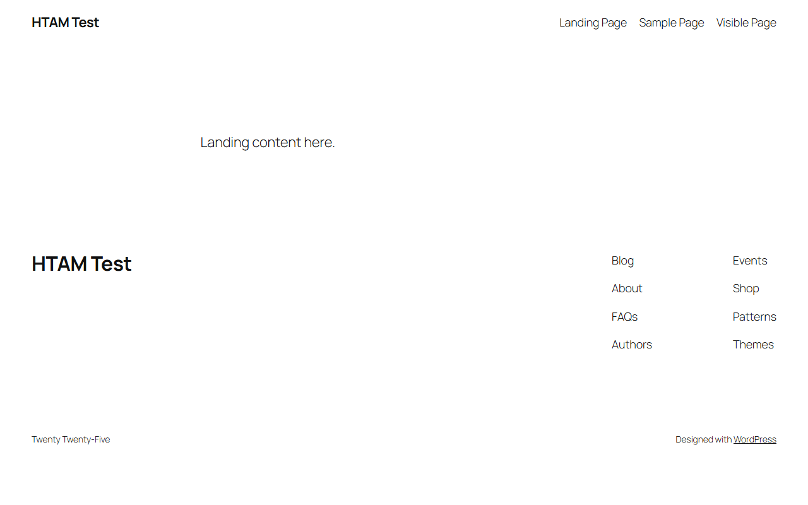
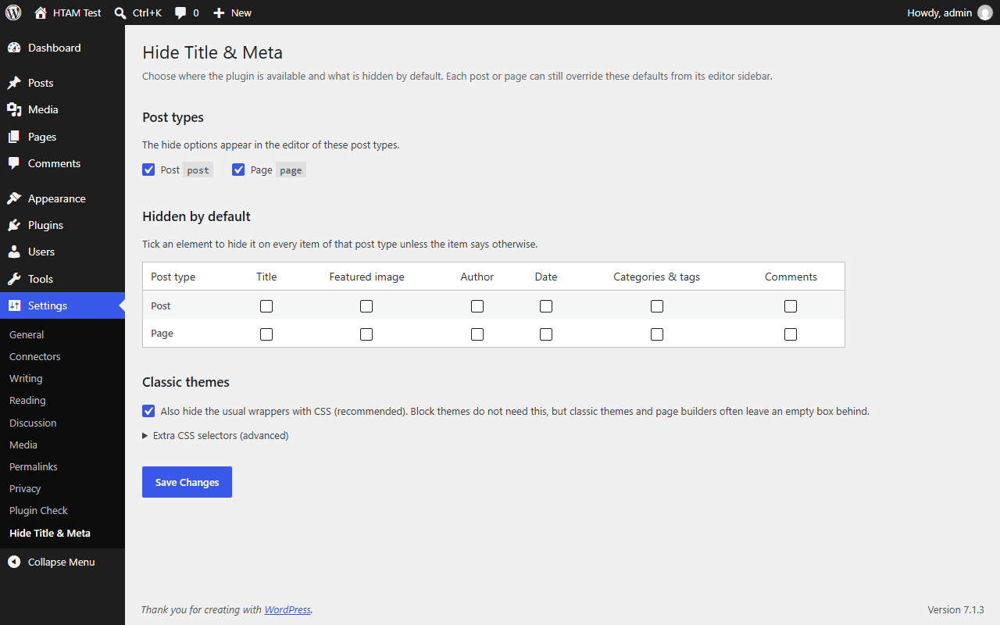

Hide the title on one page, not on all of them.
HeroBytes Hide Title & Meta adds one checkbox per element to the editor of every post and page: title, featured image, author, date, categories and comments. Tick, update, done. Works on block themes (Full Site Editing) and classic themes, and never touches your menus.

How to hide the title of a WordPress page
Three minutes, no code.
- In your WordPress admin go to Plugins > Add New, search for HeroBytes Hide Title & Meta, install and activate it.
- Edit the page. In the block editor, open the Hide Title & Meta panel in the right sidebar (in the classic editor it is a box in the right column).
- Tick Title. Tick Featured image too if your theme prints it at the top of the page.
- Click Update and open the page. The title is gone from the page header; it is still there in menus, in the browser tab and for search engines.

Hide the date, author or comments on a post
Same panel, different boxes: Author, Date, Categories & tags and Comments. On block themes the plugin removes the corresponding blocks (Post Author, Post Date, Post Terms, Comments) from that page only. On classic themes the template tags return nothing and a small CSS fallback hides the usual wrappers.
Hide the title on every page by default
Go to Settings > Hide Title & Meta, choose which post types get the panel and which elements are hidden by default on each. For example: hide the title on all pages, show it on all posts. Any individual page can still override the default.

Why the old "hide title" plugins stopped working
Most plugins of this kind were written ten years ago. They hide the title with a CSS rule aimed at the class names classic themes used (.entry-title, .page-title), or they blank the title with a filter on the_title.
- Block themes print the title differently. Since WordPress 5.9 the title is a Post Title block inside a template. The old CSS does not match it, and an empty title leaves an empty box with its margins. Hide Title & Meta removes the block itself from the page, so nothing is left behind.
- Filtering
the_titleblanks the page name everywhere. That is why those plugins also emptied the page name in navigation menus, page lists and "recent posts" widgets. This plugin tracks where the title is being printed and only hides it in the page's own header. - Some of them also broke the SEO title. Hide Title & Meta attaches its filters after the
<head>is printed, so the<title>tag and the Open Graph tags keep the real title.
Can I do it without a plugin?
Yes, with trade-offs. On a block theme you can edit the Pages template in the Site Editor and delete the Post Title block, but that hides the title on every page. A CSS rule such as .page-id-12 .wp-block-post-title { display: none } hides it on one page, but the empty block keeps its spacing, you have to find the page id, and the rule has to be repeated for each page. The plugin exists so that this is one checkbox.
Questions
The title is still visible on my classic theme.
Your theme probably uses an unusual class name for the title. Go to Settings > Hide Title & Meta > Extra CSS selectors and add the selector your theme uses (right-click the title, Inspect, copy its class). Developers can also hook the htam_selectors filter.
Will the page disappear from my navigation menu?
No. Menus, page lists, breadcrumbs and widgets keep the title. Only the title printed in the page's own header is hidden.
Does it change the browser tab title or the SEO title?
No. The <title> tag and the Open Graph / Twitter tags keep the real title.
Does it work with Elementor, Divi or other page builders?
Yes. With Elementor's theme builder widgets the title is hidden through the same mechanism as classic themes. If your builder prints the title with its own markup, add its selector in the settings.
Is anything locked behind a paid version?
No. Everything described here is in the free plugin and will stay there. No external requests, no tracking, no accounts. Uninstalling removes the option and the post meta.
Support
Use the support forum on WordPress.org or write to sebas152000@gmail.com. A reported bug becomes a new version, usually within a week.